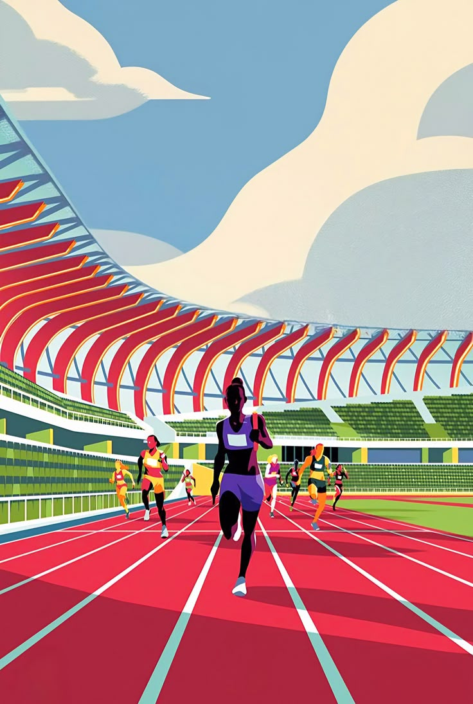

NSRS VERIFIED
ATHLETE REGISTRATION
PEAK POTENTIAL
WITH AI.
The ultimate ecosystem combining professional networking, real-time ACWR workload tracking, and AI-powered burnout prevention.
⬢
⚡ THE HARD TRUTH
41 Medals.
41 Medals.
124 Years.
1.4B People.
The Olympic picture tells a stark, uncomfortable story. Between Paris 1900 and Paris 2024, India accumulated just 41 medals—a devastating figure for a global superpower. At the 2024 games, India claimed 6 medals, sliding to 71st place globally.
41 Total Medals
6 Paris '24 Medals
71st Global Tally Rank
ATHLETES DEPLOYED TO PARIS 2024
⬢ 2024 DATA ARCHIVE
600+
400+
117
⬢
SYSTEMIC BREAKDOWN
Why India Fails
Why India Fails
Its Athletes.
Four critical roadblocks sit between raw national talent and the global podium. We mapped the exact points of failure.
01
Inadequate Infrastructure
Elite potential is lost in outdated, underfunded training facilities. Without access to biomechanical labs, recovery tech, and world-class surfaces, athletes physically cannot prepare for the realities of modern global competition.
02
Societal Paradigm
A systemic cultural bias heavily prioritizes traditional academic safety over athletic excellence. Elite sports are viewed as massive financial risks rather than viable, supported career paths, stifling generational talent before it blooms.
03
Coaching Deficit
A severe shortage of globally certified coaches and sports scientists leaves athletes relying on obsolete training methodologies. Without modern data-driven coaching, athletes hit a physiological ceiling early in their careers.
04
Grassroots Void
There is no unified, data-driven pipeline for talent identification at a young age. Without a structured tracking system, millions of potential athletes fall through the cracks of a highly fractured, disorganized sporting ecosystem.
⬢
1.4 BILLION ATHLETES • IT'S TIME THE WORLD SAW THEM •
1.4 BILLION ATHLETES • IT'S TIME THE WORLD SAW THEM •
THE SOLUTION
India Has 1.4 Billion Athletes.
India Has 1.4 Billion Athletes.
It's Time the World Saw Them.
Athogram is the ultimate ecosystem combining professional networking, real-time ACWR workload tracking, and AI-powered burnout prevention to bridge the gap between raw potential and global podiums.
3+
Sports Supported &
Growing Rapidly
Top 50
Institutes & Academies
Onboarded
10K+
Grassroots Athletes
Discovered
⬢
SYSTEM OVERVIEW
The Architecture of Podium Readiness.
We stopped logging old statistics. Athogram builds a continuous, proactive kinetic twin that maps neurological recovery, macro load horizons, and soft-tissue thresholds.
MODEL // FORESIGHT
72HRS
The Predictive Horizon
Yesterday's performance data is historical debt. The engine simulates physical adaptation 72 hours into the future, actively mapping your next breakthrough window.
SYNCHRONICITY // TIMING
⬢
METABOLIC PEAK
14:15 - 16:30
CNS DISCHARGE RATE
OPTIMAL
The 24H Flow-State Synchronizer
Aligning explosive power phases, metabolic optimization, and cognitive reaction speeds directly with astronomical time cycles. It doesn't demand harder effort—it identifies exactly when your body is biologically unstoppable.
NEUROLOGICAL // RECOVERY
CNS Deficit Interception
Muscular soreness is often an illusion; central nervous system fatigue is the true threshold. We evaluate rapid motor unit firing patterns to isolate micro-level cognitive exhaustion before your system triggers protection protocols.
MITIGATION // BIOMECHANICS
Soft Tissue Safety Factor
Real-time dampening vectors created to protect joints and soft tissues under high mechanical velocity loads. An intelligent safeguard separating output from structural strain.
⬢
JOIN THE ROSTER
Claim Your Spot on the Podium.
The Athogram beta is currently strictly invite-only. Enter your athlete email below to join the waitlist and secure early access to the NSRS tracking ecosystem.
_
⬢